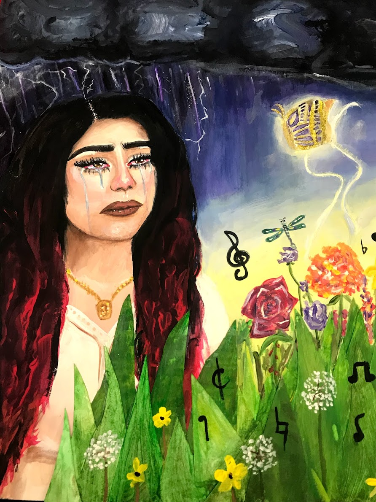

DMA
 ‚õàÔ∏è After Every Storm, There‚Äôs Sunshine üåû
Acrylic Paint, Glitter, and Bristol Paper
14x17 in
In this piece, I created a painting with elements of both 3-dimensional and 2-dimensional aspects. In our everyday lives, others can 3-dimensionally witness when someone is not feeling the best, and sometimes others cannot. What nobody else can see is the 2-dimensional battle within ourselves and reality. This piece morally means a lot to me and conveys a deeper meaning and story especially even after this piece was made. This piece remains close to my heart than any other painting I’ve made, not only because it was made at the hardest time of my life thus far (and hopefully never again), but because of the personalization and the trial and errors I’ve made to convey true emotion and feel for audiences.
In August 2019, something terribly unexpected happened that caused me to rethink everything in my life. I was in a whirlwind of emotions; anger, sadness, anxiousness, fear and so much more. “After Every Storm, There’s Sunshine” is a reminder to myself that not everything bad lasts forever. This is shown as the figure (being me) stepping out of a dark storm and into the light as a golden butterfly leads her into this delightful garden with beautiful flowers and music. Music being one of the truest things that stuck with me the whole time I was going through this troublesome time. This painting was made on Bristol paper with Acrylic paint. I used different shades of glitter such as silver and gold to emphasize the thunder and lightning in the dark background of the figure and as well as gold for the butterfly that is flying ahead of the figure. If you look closely, there is a shiny gloss used on top of the eyes, I used a varnish gloss to give the appearance of the eyes that they are crying. The 3D aspect of this painting is shown in the grass as I layered pieces of bristol paper together to create dimension and movement in the painting.
The person that caused me this pain asked me the next day (when my painting was done) why I was crying. I had nothing really to say to that, just silence. No matter how much emotion I could show to this person, they would rather choose ignorance over caring for their own daughter’s feelings. Being able to walk away from the situation was not easy, but to rather heal my wounds and head to the light where the grass is greener, is where I found that I belonged. Check on your friends, family, and even those who appear strangers to you. Someone could truly be doing the worst without even showing it, as I did.